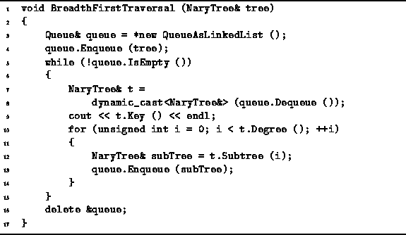

Data Structures and Algorithms
with Object-Oriented Design Patterns in C++
Data Structures and Algorithms
with Object-Oriented Design Patterns in C++
Program  defines the function BreadthFirstTraversal.
This function takes as its lone argument a reference to an NaryTree
which is the root of the tree to be traversed.
The algorithm makes use of the QueueAsLinkedList data structure,
which was defined in the preceding section,
to hold the appropriate tree nodes.
defines the function BreadthFirstTraversal.
This function takes as its lone argument a reference to an NaryTree
which is the root of the tree to be traversed.
The algorithm makes use of the QueueAsLinkedList data structure,
which was defined in the preceding section,
to hold the appropriate tree nodes.
The running time of the BreadthFirstTraversal algorithm depends on the number of nodes in the tree which is being traversed. Each node of the tree is enqueued exactly once--this requires a constant amount of work. Furthermore, in each iteration of the loop, each node is dequeued exactly once--again a constant amount of work. As a result, the running time of the BreadthFirstTraversal algorithm is O(n) where n is the number of nodes in the traversed tree.

Program: Queue Application--Breadth-First Tree Traversal
 Copyright © 1997 by Bruno R. Preiss, P.Eng. All rights reserved.
Copyright © 1997 by Bruno R. Preiss, P.Eng. All rights reserved.